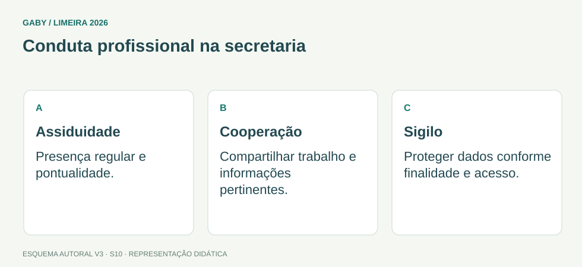

Objetivos do módulo
- Compreender comportamento profissional e relações interpessoais no ambiente escolar.
- Aplicar ética, discrição e sigilo à rotina da secretaria.
- Diferenciar conflito profissional de ataque pessoal.
- Entender assiduidade e responsabilidade funcional como elementos do serviço.
- Distinguir ética de moral e reconhecer a ética profissional nas atitudes da rotina, inclusive na cooperação, no cuidado e na impessoalidade.
- Identificar as regras deontológicas, os deveres (item XIV) e as vedações (item XV) do Código de Ética do Decreto 1.171/1994, usado pela banca como referência federal.
- Relacionar sigilo, assiduidade e representação à Lei 8.112/1990 (arts. 116 e 117, referência federal) e a impessoalidade ao art. 37 da Constituição.
- Aplicar os arts. 11 e 14 da LGPD a dados sensíveis e a dados de crianças e adolescentes na secretaria.
Conduta profissional na secretaria

Descrição em texto do esquema
- Assiduidade: Presença regular e pontualidade.
- Cooperação: Compartilhar trabalho e informações pertinentes.
- Sigilo: Proteger dados conforme finalidade e acesso.
Oficina visual · aplique o esquema
Um servidor se ausenta e deixa sua senha para um colega emitir documentos em seu nome. Qual problema isso cria?
Atividade autoral complementar da V3. Registre sua resposta; a resolução está no arquivo de gabarito e revisão.
Mapa do conteúdo
- 1. Relações humanas no trabalho
- 2. Ética profissional
- 3. Sigilo e discrição
- 4. Assiduidade e pontualidade
- 5. Trabalho em equipe
- 6. Código de Ética federal: alcance e regras deontológicas
- 7. Deveres fundamentais do servidor (item XIV)
- 8. Vedações ao servidor (item XV)
- 9. Comissão de Ética e pena de censura
- 10. Lei 8.112/1990 e art. 37 da Constituição
- 11. LGPD: dados sensíveis e dados de crianças e adolescentes
1. Relações humanas no trabalho
A secretaria escolar interage com direção, professores, alunos, famílias, servidores e órgãos externos. Relações profissionais saudáveis dependem de respeito, cooperação, comunicação clara e cumprimento de responsabilidades.
Divergência de opinião é normal. O problema surge quando o conflito deixa o campo profissional e vira desrespeito, boato, retaliação ou obstrução do trabalho.
Como conduzir uma divergência
- Separe o fato da pessoa: discuta o procedimento, não o colega.
- Consulte a norma, a instrução ou o calendário que regula o assunto.
- Converse em local reservado, com tom respeitoso, e ouça a outra versão.
- Se o impasse continuar, leve a questão à chefia competente.
- Registre a decisão tomada, para que todos sigam o mesmo critério.
Cooperação e solidariedade, não humilhação
Cooperação é trabalhar junto por um objetivo comum. Solidariedade é a disposição de apoiar quem precisa. Em atividades com estudantes pode haver competição, mas a equipe escolar orienta a interação para a colaboração: ninguém vence humilhando, excluindo ou expondo o outro. Diferença de desempenho é motivo para apoio, não para zombaria ou para afastar alguém antecipadamente.
O mesmo vale entre adultos. O setor que esconde uma orientação para o outro errar, ou que ironiza a dúvida de um colega novo, rompe a cooperação e prejudica o serviço.
Aprendizagem e desenvolvimento: dificuldade não é rótulo
Desenvolvimento é processo. A criança e o adolescente mudam com a aprendizagem, a convivência e o apoio que recebem. Uma dificuldade observada no início do ano (de fala, de leitura, de socialização) descreve aquele momento; não é definitiva e não define a pessoa. Dizer “esse aluno nunca vai conseguir” cria um rótulo que reduz as oportunidades oferecidas a ele.
Isso não significa exigir que todos aprendam no mesmo ritmo, nem garantir resultado automático. O papel da escola é observar, apoiar e acompanhar a evolução. Na secretaria, isso aparece na linguagem dos registros: anote o fato (“faltou a 5 das 18 aulas de abril”), não o julgamento (“aluno problemático”).
O valor do cuidado no cotidiano escolar
As Diretrizes Curriculares Nacionais Gerais para a Educação Básica (Parecer CNE/CEB nº 7/2010, item 2.1) tratam educar e cuidar como dimensões inseparáveis. Cuidar, ali, não é só tarefa técnica, administrativa ou de segurança: envolve acolher, ouvir, encorajar e apoiar, cuidando de si, do outro, da escola e da natureza.
O parecer fundamenta esse valor na ética e na estética, que orientam a convivência de cada pessoa no coletivo. Essa convivência pressupõe cooperação, solidariedade, respeito à liberdade e respeito à alteridade — reconhecer o outro como diferente de mim e igualmente digno.
Na secretaria, o cuidado aparece em atos simples: atender a família com atenção, explicar um procedimento sem pressa, preservar a intimidade do aluno e manter os documentos íntegros.
2. Ética profissional
Conduta ética envolve atuar conforme normas, interesse público, respeito aos usuários e responsabilidade pelos próprios atos. Favorecimento pessoal, manipulação de registros, omissão deliberada e uso indevido de informação são incompatíveis com essa postura.
O servidor deve reconhecer limites de competência: não decide o que cabe à direção ou autoridade superior apenas para “resolver mais rápido”.
Ética e moral
Ética é o conjunto de princípios e valores que orienta como as pessoas agem e convivem. Entre esses valores estão a honestidade, a justiça, a solidariedade e o respeito às pessoas e aos bens públicos. Também se chama ética a reflexão sobre esses valores: por que uma conduta é certa ou errada.
| Termo | Ideia central | Exemplo na escola |
|---|---|---|
| Moral | Costumes e regras de conduta aceitos por um grupo, em certo tempo e lugar. | “Aqui ninguém fura a fila do atendimento.” |
| Ética | Princípios e valores que orientam a conduta e a reflexão sobre eles. | Perguntar se um atendimento “por amizade” é justo com quem esperou. |
| Lei | Norma obrigatória editada pelo Estado, com sanção. | O art. 37 da Constituição impõe impessoalidade à administração. |
Nem tudo o que é legal é ético, e a ética pede mais do que evitar o ilegal. Por isso o Código de Ética federal manda decidir também entre o honesto e o desonesto (seção 6).
Ética profissional: atitudes de todo dia
Ética profissional é a aplicação desses valores ao trabalho. Ela constrói atitudes e comportamentos nas relações pessoais (com colegas, alunos e famílias) e nas institucionais (com a direção, a Secretaria de Educação e outros órgãos). Não é um código para usar só em crises: aparece em cumprir prazo, registrar a verdade, atender sem preferência, guardar a informação e cuidar do material público.
Ética profissional não se resume a cumprir normas técnicas nem a buscar resultado ou lucro, e não serve de desculpa para calar um fato relevante só para agradar a chefia (item VIII do Código, seção 6).
Impessoalidade no atendimento
A Constituição Federal, no art. 37, caput, manda a administração pública de todos os entes — União, Estados, Distrito Federal e Municípios — obedecer aos princípios de legalidade, impessoalidade, moralidade, publicidade e eficiência. Vale, portanto, para a rede municipal de Limeira.
Impessoalidade é tratar todos de forma igual diante da mesma situação, sem favorecer conhecidos nem prejudicar desafetos. O critério é a regra e o fato, não a pessoa. Exemplo: três alunos perderam o mesmo prazo de entrega de documento; todos recebem o mesmo novo prazo e a mesma orientação, ainda que um deles seja sobrinho de uma funcionária. Tratamento equitativo e padronizado protege a todos.
3. Sigilo e discrição
A secretaria lida com dados escolares, pessoais e funcionais. Sigilo significa impedir divulgação indevida, mas não impedir acesso legítimo de quem precisa da informação para exercer atribuição ou direito.
Conversar sobre situação de aluno em corredor, grupo informal ou rede social pode expor informação desnecessariamente.
Sigilo profissional na prática
Sigilo profissional é o dever de não repassar a terceiros a informação conhecida em razão do trabalho. Na escola isso inclui situação familiar, saúde, medidas de proteção, notas, ocorrências disciplinares e dados de contato de alunos e famílias. Terceiros, aqui, são todos os que não precisam da informação para exercer uma atribuição ou um direito: outros pais, outros alunos, visitantes e até colegas sem relação com o caso.
O dever vale mesmo quando a informação chegou por acaso — um documento visto ao arquivar, um telefonema atendido no lugar de um colega. A quem pergunta por curiosidade, responda com educação e de forma genérica: “não posso tratar de assuntos de outros alunos”.
Como referência federal, a Lei 8.112/1990 coloca o sigilo entre os deveres do servidor (art. 116, VIII). Para dados pessoais, a LGPD, que é lei nacional e vale para a rede municipal, reforça esse cuidado (seção 11).
Sigilo não é segredo de tudo
O mesmo art. 116 manda atender com presteza o público, prestando as informações requeridas, ressalvadas as protegidas por sigilo (inciso V, a), e expedir certidões requeridas para defesa de direito (inciso V, b). Quem tem atribuição ou direito sobre a informação tem acesso legítimo: o responsável pelo próprio aluno, a direção que precisa decidir, a fiscalização competente. O restante, não.
4. Assiduidade e pontualidade
Assiduidade é regularidade de comparecimento; pontualidade é cumprimento dos horários. Em ambiente escolar, ausências e atrasos injustificados podem comprometer atendimento, prazos, matrículas, documentação e divisão de trabalho.
A prova pode apresentar assiduidade como componente do comportamento profissional e da responsabilidade funcional.
O que dizem as normas de referência
| Dispositivo | O que determina | Como cai |
|---|---|---|
| Decreto 1.171/1994, Anexo, item XII | Toda ausência injustificada do local de trabalho desmoraliza o serviço público e quase sempre leva à desordem nas relações humanas. | Falta sem justificativa não é assunto só pessoal: afeta a equipe. |
| Decreto 1.171/1994, Anexo, item XIV, l | Dever de ser assíduo e frequente ao serviço; a ausência provoca danos ao trabalho ordenado e reflete em todo o sistema. | A palavra-chave aqui é “assíduo”, não “pontual”. |
| Lei 8.112/1990, art. 116, X | Dever de ser assíduo e pontual ao serviço. | Aqui a dupla é “assíduo e pontual”. |
| Lei 8.112/1990, art. 117, I | Proíbe ausentar-se do serviço durante o expediente sem prévia autorização do chefe imediato. | Sair no meio do expediente exige autorização. |
As duas normas são federais e aparecem na prova como referência; o servidor de Limeira segue o estatuto municipal quanto a frequência e faltas. A lógica é a mesma: afastamento regular (férias, licença, falta justificada e comunicada) não viola o dever; a ausência injustificada, sim, porque deixa o atendimento, os prazos e a divisão do trabalho descobertos.
Disciplina, produtividade e gestão do tempo
Disciplina no trabalho é manter a rotina combinada mesmo sem fiscalização: chegar no horário, seguir prioridades, concluir o que começou e registrar o que fez. Ela está ligada à produtividade: quem organiza as tarefas e administra o tempo entrega mais e com qualidade, sem depender de pressa no último dia. Disciplina não é correria nem rigidez que impede ideias novas.
- Liste as tarefas do dia e marque os prazos.
- Separe o urgente (declaração pedida para amanhã) do importante sem prazo imediato (reorganizar o arquivo morto).
- Agrupe tarefas parecidas, como emitir todas as declarações de uma vez.
- Reserve um horário sem interrupções para conferências.
- Anote os prazos do calendário escolar e das normas da rede.
O Código de Ética federal liga a disciplina à cortesia, à boa vontade, ao cuidado e ao tempo dedicados ao serviço público (item IX).
5. Trabalho em equipe
Cooperação não significa executar atos ilegais ou assumir responsabilidades indevidas. Uma equipe eficiente compartilha informação necessária, respeita papéis, documenta decisões importantes e busca solução institucional para conflitos.
Harmonia com a estrutura organizacional
O item XIII do Código de Ética federal (Decreto 1.171/1994) afirma que o servidor que trabalha em harmonia com a estrutura organizacional, respeitando colegas e cidadãos, colabora e pode receber colaboração de todos, pois a atividade pública é oportunidade de crescimento e engrandecimento da Nação. Colaborar, portanto, não é favor: é parte do trabalho.
Harmonia com a estrutura é respeitar atribuições e fluxos: a secretaria prepara o documento, a direção assina; cada setor faz sua parte e informa o outro. Compartilhe as informações de trabalho de que o colega precisa para cumprir a tarefa — e só elas.
Lealdade à equipe tem limite
Solidariedade com colegas não autoriza encobrir erro. O item XV, c, do mesmo Código veda ser conivente, por espírito de solidariedade, com erro ou infração ao Código. Cooperar também nunca inclui praticar ato ilegal, emprestar senha ou assumir atribuição alheia.
6. Código de Ética federal: alcance e regras deontológicas
Como o Código se organiza
O Código está no Anexo do Decreto, em itens numerados em romanos. Deontologia é o estudo dos deveres.
- Capítulo I, Seção I — Regras deontológicas: itens I a XIII, princípios de conduta.
- Seção II — Principais deveres: item XIV, alíneas a a v (seção 7).
- Seção III — Vedações: item XV, alíneas a a p (seção 8).
- Capítulo II — Comissões de Ética: itens XVI a XXV, vários revogados (seção 9).
As alíneas seguem o alfabeto antigo, sem a letra “k”: nos itens XIV e XV, depois da alínea j vem a alínea l.
Regras deontológicas (itens I a XIII)
| Item | O que determina | Como cai |
|---|---|---|
| Item I | Dignidade, decoro, zelo, eficácia e consciência dos princípios morais devem nortear o servidor no cargo e fora dele; seus atos visam preservar a honra e a tradição do serviço público. | Ética não termina no fim do expediente. |
| Item II | O servidor não pode desprezar o elemento ético da conduta: não decide só entre o legal e o ilegal, o justo e o injusto, o conveniente e o inconveniente, o oportuno e o inoportuno, mas principalmente entre o honesto e o desonesto. | Conduta sem proibição expressa ainda pode ser desonesta. |
| Item III | A moralidade da Administração não se limita a distinguir o bem do mal: o fim é sempre o bem comum. O equilíbrio entre a legalidade e a finalidade consolida a moralidade do ato administrativo. | Ato formalmente legal com finalidade desviada não é moral. |
| Item IV | A remuneração do servidor é custeada pelos tributos de todos, inclusive dele; por isso a moralidade administrativa deve integrar o Direito. | Fundamento da exigência de moralidade. |
| Item V | O trabalho do servidor perante a comunidade deve ser entendido como acréscimo ao seu próprio bem-estar: como cidadão, ele integra a sociedade, e o êxito desse trabalho pode ser considerado seu maior patrimônio. | Servir bem também beneficia o servidor; o trabalho não é desligado da comunidade. |
| Item VI | A função pública se integra na vida particular do servidor: fatos e atos da vida privada podem acrescer ou diminuir seu bom conceito na vida funcional. | Vida privada pode repercutir no conceito funcional; o texto não dá ao órgão controle sobre escolhas íntimas. |
| Item VII | A publicidade dos atos administrativos é requisito de eficácia e moralidade, salvo segurança nacional, investigação policial ou interesse superior do Estado, preservados em processo previamente declarado sigiloso, nos termos da lei. | Negar publicidade sem base legal é falha ética. |
| Item VIII | Toda pessoa tem direito à verdade. O servidor não pode omiti-la nem falseá-la, ainda que contrária aos interesses da própria pessoa interessada ou da Administração Pública. | Não maquiar resposta oficial para proteger a imagem do setor. |
| Item IX | Cortesia, boa vontade, cuidado e tempo dedicados ao serviço caracterizam o esforço pela disciplina. Tratar mal quem paga tributos causa dano moral; danificar bem público por descuido ofende a todos. | Disciplina e zelo com o patrimônio. |
| Item X | Deixar alguém à espera de solução que compete ao seu setor, com filas ou qualquer atraso, é grave dano moral ao usuário. | Fila parada não é só falta de cortesia. |
| Item XI | Atenção às ordens legais dos superiores, velando por seu cumprimento e evitando a negligência; erros repetidos e descaso podem caracterizar imprudência. | Ordem legal se cumpre com atenção. |
| Item XII | Ausência injustificada desmoraliza o serviço e quase sempre conduz à desordem nas relações humanas. | Assiduidade (seção 4). |
| Item XIII | Quem trabalha em harmonia com a estrutura organizacional, respeitando colegas e cidadãos, colabora e pode receber colaboração. | Cooperação (seção 5). |
7. Deveres fundamentais do servidor (item XIV)
O item XIV do Código (Decreto 1.171/1994, referência federal) lista os deveres fundamentais do servidor público em alíneas de a a v. Leia cada dever com o exemplo escolar ao lado.
| Alínea | Dever | Exemplo na escola |
|---|---|---|
| a | Desempenhar, a tempo, as atribuições do cargo, função ou emprego. | Prazo de uma declaração vencendo: se houver impedimento real, avisar a chefia antes do vencimento, e não deixar passar em silêncio. |
| b | Exercer as atribuições com rapidez, perfeição e rendimento, resolvendo prioritariamente situações procrastinatórias, sobretudo filas e atrasos. | Na rematrícula, organizar senhas e atender primeiro o pedido que está parado há mais tempo. |
| c | Ser probo, reto, leal e justo; diante de duas opções, escolher sempre a melhor e a mais vantajosa para o bem comum. | Entre dois horários de plantão, escolher o que atende mais famílias, e não o mais cômodo para a equipe. |
| d | Jamais retardar qualquer prestação de contas, condição essencial da gestão dos bens, direitos e serviços da coletividade. | Entregar no prazo os comprovantes de compra de material feita com verba repassada à escola. |
| e | Tratar cuidadosamente os usuários, aperfeiçoando a comunicação e o contato com o público. | Explicar a lista de documentos por escrito, em linguagem simples. |
| f | Ter consciência de que o trabalho é regido por princípios éticos que se materializam na adequada prestação do serviço. | Ética se vê no serviço bem prestado. |
| g | Ser cortês, ter urbanidade, disponibilidade e atenção, respeitando capacidades e limitações dos usuários, sem preconceito ou distinção de raça, sexo, nacionalidade, cor, idade, religião, cunho político e posição social. | Mesmo atendimento para todas as famílias. |
| h | Respeitar a hierarquia, porém sem nenhum temor de representar contra qualquer comprometimento indevido da estrutura do Poder Estatal. | Respeitar a chefia não impede levar uma irregularidade à instância competente. |
| i | Resistir a todas as pressões de superiores, contratantes, interessados e outros que visem favores ou vantagens indevidas decorrentes de ações imorais, ilegais ou aéticas, e denunciá-las. | Pedido para “encaixar” matrícula fora da ordem: recusar e comunicar. |
| j | Zelar, no exercício do direito de greve, pelas exigências específicas da defesa da vida e da segurança coletiva. | Greve não autoriza deixar sem atenção situação de risco à vida ou à segurança. |
| l | Ser assíduo e frequente ao serviço (seção 4). | Ausência injustificada prejudica todo o setor. |
| m | Comunicar imediatamente aos superiores todo ato ou fato contrário ao interesse público, exigindo as providências cabíveis. | Viu sumir material da escola: relatar os fatos à direção, em vez de espalhar boato. |
| n | Manter limpo e em perfeita ordem o local de trabalho, seguindo os métodos mais adequados à sua organização e distribuição. | Pastas etiquetadas e devolvidas ao lugar. |
| o | Participar dos movimentos e estudos que se relacionem com a melhoria do exercício das funções, tendo por escopo o bem comum. | Fazer a formação sobre o novo sistema de matrícula. |
| p | Apresentar-se ao trabalho com vestimentas adequadas ao exercício da função. | O critério é a função, não marca ou moda. |
| q | Manter-se atualizado com as instruções, as normas de serviço e a legislação pertinentes ao órgão. | Saiu instrução nova sobre documentação: ler e aplicar, sem manter o costume antigo. |
| r | Cumprir as tarefas conforme as normas do serviço e as instruções superiores, com critério, segurança e rapidez, mantendo tudo em boa ordem. | Seguir o fluxo definido para expedir histórico. |
| s | Facilitar a fiscalização de todos os atos ou serviços por quem de direito. | A supervisão pede os livros de matrícula: entregar íntegros. “Quem de direito” é a autoridade competente, não qualquer pessoa. |
| t | Exercer com estrita moderação as prerrogativas funcionais, sem contrariar os legítimos interesses dos usuários. | Poder de exigir documento não serve para constranger. |
| u | Abster-se, de forma absoluta, de exercer função, poder ou autoridade com finalidade estranha ao interesse público, mesmo observando as formalidades legais e sem violação expressa à lei. | Forma correta não salva finalidade privada. |
| v | Divulgar e informar a todos os integrantes da sua classe sobre a existência do Código de Ética, estimulando o seu integral cumprimento. | Apresentar o código aos novos colegas. |
8. Vedações ao servidor (item XV)
O item XV do Código (Decreto 1.171/1994, referência federal) lista o que é vedado ao servidor, em alíneas de a a p. Na prova, a banca descreve uma conduta e pede a vedação correspondente.
| Alínea | É vedado | Exemplo na escola |
|---|---|---|
| a | Usar cargo ou função, facilidades, amizades, tempo, posição e influências para obter qualquer favorecimento, para si ou para outrem. | Pedir a um conhecido de outro órgão que adiante o pedido de um parente. |
| b | Prejudicar deliberadamente a reputação de outros servidores ou de cidadãos que deles dependam. | Espalhar acusação inventada. Comunicar fato real, de boa-fé, à autoridade competente não é isso. |
| c | Ser, por espírito de solidariedade, conivente com erro ou infração ao Código ou ao código de ética da profissão. | Encobrir falta de um amigo. |
| d | Usar artifícios para procrastinar ou dificultar o exercício regular de direito, causando dano moral ou material. | “Esquecer” na gaveta um pedido de vaga. |
| e | Deixar de utilizar os avanços técnicos e científicos ao seu alcance ou do seu conhecimento para atendimento do seu mister. | Calcular frequência à mão quando o sistema autorizado faz a conta e reduz erros. |
| f | Permitir que perseguições, simpatias, antipatias, caprichos, paixões ou interesses de ordem pessoal interfiram no trato com o público ou com colegas superiores ou subordinados. | Atender pior a família com quem houve discussão. |
| g | Pleitear, solicitar, provocar, sugerir ou receber qualquer ajuda financeira, gratificação, prêmio, comissão, doação ou vantagem de qualquer espécie, para si, familiares ou qualquer pessoa, para cumprir a missão ou influenciar outro servidor. | Aceitar vale-compras de uma loja para indicá-la aos pais. |
| h | Alterar ou deturpar o teor de documentos que deva encaminhar para providências. | Mudar a data de um requerimento antes de enviá-lo. |
| i | Iludir ou tentar iludir quem necessita do atendimento. | Dizer que não há vaga quando há. |
| j | Desviar servidor público para atendimento a interesse particular. | Mandar um colega resolver assunto pessoal da chefia no expediente. |
| l | Retirar da repartição, sem estar legalmente autorizado, documento, livro ou bem do patrimônio público. | Levar para casa o projetor da escola sem autorização formal. |
| m | Usar informações privilegiadas obtidas no âmbito interno do serviço em benefício próprio, de parentes, amigos ou terceiros. | Avisar um amigo, antes da divulgação, sobre vagas que serão abertas. |
| n | Apresentar-se embriagado no serviço ou, habitualmente, fora dele. | — |
| o | Dar seu concurso a instituição que atente contra a moral, a honestidade ou a dignidade da pessoa humana. | — |
| p | Exercer atividade profissional aética ou ligar seu nome a empreendimentos de cunho duvidoso. | — |
Compare com a referência estatutária federal: a Lei 8.112/1990 proíbe receber propina, comissão, presente ou vantagem de qualquer espécie em razão das atribuições (art. 117, XII) e retirar documento ou objeto da repartição sem prévia anuência da autoridade competente (art. 117, II).
9. Comissão de Ética e pena de censura
O Capítulo II do Código trata das Comissões de Ética. No âmbito federal, cada órgão deve constituir sua comissão, integrada por três servidores ou empregados titulares de cargo efetivo ou emprego permanente (Decreto 1.171/1994, art. 2º).
| Item | O que determina | Como cai |
|---|---|---|
| XVI | Em todos os órgãos e entidades da Administração Pública Federal direta, indireta autárquica e fundacional, ou que exerçam atribuições delegadas pelo poder público, deve haver Comissão de Ética, encarregada de orientar e aconselhar sobre a ética profissional do servidor, no trato com as pessoas e com o patrimônio público, e de conhecer concretamente imputação ou procedimento suscetível de censura. | Função consultiva (orientar e aconselhar) e de apreciação. |
| XVIII | A comissão fornece os registros sobre a conduta ética do servidor para instruir promoções e demais procedimentos da carreira. | Conduta ética conta na carreira. |
| XXII | A pena aplicável pela Comissão de Ética é a censura, fundamentada em parecer assinado por todos os integrantes, com ciência do faltoso. | Única pena do Código. |
| XXIV | Para apuração ética, servidor é todo aquele que, por lei, contrato ou qualquer ato jurídico, preste serviço permanente, temporário ou excepcional, ainda que sem retribuição, ligado direta ou indiretamente a órgão do poder estatal (inclusive autarquias, fundações, empresas públicas e sociedades de economia mista). | Conceito amplo de servidor. |
Itens revogados: o Decreto 6.029/2007, que instituiu o Sistema de Gestão da Ética do Poder Executivo Federal, revogou os itens XVII, XIX, XX, XXI, XXIII e XXV do Código (art. 25). Não estude esses itens como regra vigente.
Censura não é advertência, suspensão nem demissão. Essas penalidades disciplinares são do estatuto — na referência federal, Lei 8.112/1990, art. 127 — e dependem de processo disciplinar próprio.
10. Lei 8.112/1990 e art. 37 da Constituição
Abrangência
A Lei 8.112/1990 institui o regime jurídico dos servidores públicos civis da União, das autarquias e das fundações públicas federais (art. 1º). Para a rede municipal de Limeira ela é referência federal usada pela banca; o servidor municipal segue o estatuto do Município. Já a Constituição Federal vale para todos os entes, inclusive o Município.
Art. 116: deveres do servidor (referência federal)
| Dispositivo | O que determina | Como cai |
|---|---|---|
| Art. 116, I | Exercer com zelo e dedicação as atribuições do cargo. | Base geral dos deveres. |
| Art. 116, III | Observar as normas legais e regulamentares. | Costume não substitui norma. |
| Art. 116, IV | Cumprir as ordens superiores, exceto quando manifestamente ilegais. | Hierarquia não é obediência cega. |
| Art. 116, V, a e b | Atender com presteza o público, prestando as informações requeridas, ressalvadas as protegidas por sigilo; e expedir certidões requeridas para defesa de direito ou esclarecimento de situações de interesse pessoal. | Sigilo convive com o acesso legítimo. |
| Art. 116, VI | Levar as irregularidades de que tiver ciência em razão do cargo à autoridade superior ou, se houver suspeita de envolvimento desta, a outra autoridade competente (redação da Lei 12.527/2011). | Canal correto para irregularidades. |
| Art. 116, VII | Zelar pela economia do material e pela conservação do patrimônio público. | Cuidado com o bem público. |
| Art. 116, VIII | Guardar sigilo sobre assunto da repartição. | Sigilo profissional (seção 3). |
| Art. 116, IX | Manter conduta compatível com a moralidade administrativa. | — |
| Art. 116, X | Ser assíduo e pontual ao serviço. | Assiduidade e pontualidade (seção 4). |
| Art. 116, XI | Tratar com urbanidade as pessoas. | Cortesia no atendimento. |
| Art. 116, XII e parágrafo único | Representar contra ilegalidade, omissão ou abuso de poder; a representação segue a via hierárquica e é apreciada pela autoridade superior àquela contra a qual é formulada, assegurada ampla defesa. | Representar é dever, não deslealdade. |
Art. 117: proibições ligadas ao tema
- I: ausentar-se do serviço durante o expediente sem prévia autorização do chefe imediato.
- II: retirar, sem prévia anuência da autoridade competente, qualquer documento ou objeto da repartição.
- XII: receber propina, comissão, presente ou vantagem de qualquer espécie, em razão de suas atribuições.
- XVI: utilizar pessoal ou recursos materiais da repartição em serviços ou atividades particulares.
Constituição, art. 37, caput
Os cinco princípios são lembrados pela sigla LIMPE. Na secretaria: legalidade (fazer o que a norma prevê), impessoalidade (mesmo critério para todos, sem favorecimento pessoal — seção 2), moralidade (honestidade e finalidade pública), publicidade (dar transparência aos atos, respeitados os sigilos legais) e eficiência (bom resultado com o recurso disponível).
11. LGPD: dados sensíveis e dados de crianças e adolescentes
A Lei Geral de Proteção de Dados Pessoais (Lei 13.709/2018) é lei nacional e se aplica ao poder público, inclusive à escola municipal. A Lei 15.352/2026 alterou dispositivos sobre a autoridade nacional — hoje Agência Nacional de Proteção de Dados (ANPD) —, mas não mudou os arts. 11 e 14, conferidos no texto compilado.
O que é dado pessoal sensível (art. 5º, II)
É o dado pessoal sobre origem racial ou étnica, convicção religiosa, opinião política, filiação a sindicato ou a organização de caráter religioso, filosófico ou político, dado referente à saúde ou à vida sexual, dado genético ou biométrico, quando vinculado a uma pessoa natural. Na escola: laudo, alergia, medicação, religião declarada, foto usada em reconhecimento facial.
Art. 11: quando o dado sensível pode ser tratado
| Dispositivo | O que determina | Como cai |
|---|---|---|
| Art. 11, I | Com consentimento do titular ou do seu responsável legal, de forma específica e destacada, para finalidades específicas. | Consentimento genérico ou presumido não serve. |
| Art. 11, II | Sem consentimento, só quando indispensável para: a) obrigação legal ou regulatória; b) execução de políticas públicas pela administração; c) estudos por órgão de pesquisa; d) exercício regular de direitos; e) proteção da vida ou da incolumidade física; f) tutela da saúde por profissionais, serviços de saúde ou autoridade sanitária; g) prevenção à fraude e segurança do titular em identificação e autenticação eletrônica. | Lista fechada de hipóteses. |
| Art. 11, § 1º | O artigo se aplica a qualquer tratamento de dados pessoais que revele dados sensíveis e possa causar dano ao titular, ressalvada legislação específica. | Importa o que o tratamento revela, não o nome da coluna. |
| Art. 11, § 2º | Órgão público que usar as alíneas a e b do inciso II dá publicidade à dispensa de consentimento, nos termos do art. 23, I. | Transparência do poder público. |
Exemplo do § 1º: uma lista chamada “saída antecipada às quintas” parece comum, mas se registra que os alunos saem para um culto religioso, revela convicção religiosa e pode expô-los. Ela merece o mesmo cuidado de um dado sensível.
Art. 14: dados de crianças e adolescentes
Pelo ECA (Lei 8.069/1990, art. 2º), criança é a pessoa até doze anos de idade incompletos, e adolescente, a que tem entre doze e dezoito anos. O caput do art. 14 vale para os dois grupos; o § 1º fala só de crianças.
| Dispositivo | O que determina | Como cai |
|---|---|---|
| Art. 14, caput | Tratamento sempre no melhor interesse da criança e do adolescente. | Conveniência da escola ou de terceiros não prevalece. |
| Art. 14, § 1º | Tratamento de dados de crianças com consentimento específico e em destaque dado por pelo menos um dos pais ou pelo responsável legal. | Basta um dos pais; não são “ambos”. |
| Art. 14, § 2º | Nesse caso, o controlador mantém pública a informação sobre os tipos de dados coletados, a forma de uso e os procedimentos para exercer os direitos do art. 18. | Transparência. |
| Art. 14, § 3º | Dados de crianças podem ser coletados sem o consentimento do § 1º quando necessários para contatar os pais ou o responsável, utilizados uma única vez e sem armazenamento, ou para sua proteção; em nenhum caso podem ser repassados a terceiro sem aquele consentimento. | Exceção estreita: contato ou proteção. |
| Art. 14, § 4º | Não condicionar a participação em jogos, aplicações de internet ou outras atividades ao fornecimento de informações pessoais além das estritamente necessárias à atividade. | Coleta excessiva para participar é vedada. |
| Art. 14, § 5º | O controlador deve realizar todos os esforços razoáveis para verificar que o consentimento foi dado pelo responsável pela criança, consideradas as tecnologias disponíveis. | Verificar, sem expor documentos. |
| Art. 14, § 6º | Informações sobre o tratamento fornecidas de maneira simples, clara e acessível, consideradas as características físico-motoras, perceptivas, sensoriais, intelectuais e mentais do usuário, com recursos audiovisuais quando adequado, para informar os pais e ser entendidas pela criança. | Linguagem adequada ao público. |
O § 1º trata da hipótese em que o tratamento se apoia em consentimento. A escola pública também trata dados com base em outras hipóteses da lei, como o cumprimento de obrigação legal (art. 7º, II, e art. 11, II, a), sempre no melhor interesse do estudante e só com os dados necessários.
Exemplos resolvidos passo a passo
Exemplo 1
Situação: Colega pede senha do sistema porque esqueceu a própria.
Exemplo 2
Situação: Servidor comenta no corredor problema familiar de um aluno para colegas sem necessidade funcional.
Exemplo 3
Situação: Duas pessoas discordam sobre procedimento.
Exemplo 4 — vale-compras de fornecedor
Situação: O dono de uma loja de uniformes oferece à secretária um vale-compras de R$ 200 se ela indicar a loja às famílias na matrícula.
Exemplo 5 — assíduo ou pontual?
Situação: Um auxiliar nunca falta, mas chega 30 minutos atrasado quase todos os dias e sai antes do fim do expediente sem avisar.
Exemplo 6 — inscrição em torneio online
Situação: Para inscrever alunos de 9 e 10 anos num torneio de xadrez online, um formulário pede nome, turma, CPF de um dos pais, renda familiar e religião da criança.
Exemplo 7 — dever ou vedação?
Situação: Classifique pelo Decreto 1.171/1994: (1) levar o notebook da escola para uma viagem de férias sem autorização; (2) a chefia manda um auxiliar buscar o carro dela na oficina durante o expediente; (3) fazer o curso oferecido sobre o novo sistema de matrícula; (4) trocar a data de um ofício antes de encaminhá-lo, para esconder um atraso.
Pegadinhas e erros frequentes
- Confundir coleguismo com compartilhamento de senha.
- Divulgar informação porque “todo mundo da escola conhece”.
- Favorecer conhecido no atendimento.
- Tratar assiduidade como irrelevante.
- Resolver conflito por boato ou exposição pública.
- Tratar o Decreto 1.171/1994 e a Lei 8.112/1990 como regras da rede municipal: são normas federais da União, usadas como referência; o servidor de Limeira segue o estatuto municipal.
- Procurar alínea “k” nos itens XIV e XV do Código: ela não existe; depois do j vem o l.
- Achar que o Código manda decidir só entre o legal e o ilegal: o item II exige decidir principalmente entre o honesto e o desonesto.
- Usar a solidariedade para encobrir colega: o item XV, c, veda a conivência.
- Confundir respeito à hierarquia com obediência cega: o item XIV, h, permite representar, e a Lei 8.112/1990 excetua ordens manifestamente ilegais (art. 116, IV).
- Supor que cumprir a forma legal basta: o item XIV, u, veda finalidade estranha ao interesse público mesmo com as formalidades observadas.
- Trocar as duplas: Decreto, “assíduo e freqüente” (XIV, l); Lei 8.112/1990, “assíduo e pontual” (art. 116, X).
- Dizer que a Comissão de Ética aplica multa, suspensão ou demissão: a pena do Código é a censura (item XXII).
- Citar como vigentes os itens XVII, XIX, XX, XXI, XXIII e XXV: foram revogados pelo Decreto 6.029/2007.
- Exigir consentimento dos dois pais: o art. 14, § 1º, da LGPD pede o de pelo menos um dos pais ou do responsável legal.
- Achar que o dado só é sensível se a coluna tiver esse nome: o art. 11, § 1º, alcança o tratamento que revela dado sensível.
- Ver dificuldade inicial de um aluno como definitiva ou transformá-la em rótulo.
Resumo de prova
- Relação profissional exige respeito e cooperação.
- Ética = norma + interesse público + responsabilidade.
- Sigilo protege informação contra divulgação indevida.
- Acesso legítimo não é quebra de sigilo.
- Assiduidade e pontualidade sustentam continuidade do serviço.
- Trabalho em equipe respeita competências.
- Ética = princípios e valores que orientam a conduta; moral = costumes do grupo; lei = norma obrigatória do Estado.
- Cooperação e solidariedade, sem humilhação; dificuldade inicial não é rótulo; cuidado com respeito à alteridade (Parecer CNE/CEB 7/2010).
- Disciplina e gestão do tempo sustentam a produtividade.
- CF, art. 37, caput: legalidade, impessoalidade, moralidade, publicidade e eficiência; vale para o Município.
- Decreto 1.171/1994 (referência federal): II honesto × desonesto; III legalidade e finalidade; V bem-estar e êxito; VI vida privada; VIII verdade; XII e XIV, l assiduidade; XIII harmonia.
- Deveres (XIV): a a tempo; c bem comum; d contas; h hierarquia e representação; i resistir a pressões; j greve; m comunicar; n ordem; o estudos; p vestimentas; q atualização; s fiscalização; t moderação; u finalidade; v divulgar.
- Vedações (XV): a favorecimento; b reputação; c conivência; e avanços técnicos; f antipatias; g vantagens; h documentos; j desvio de servidor; l retirar bens; m informação privilegiada.
- Comissão de Ética orienta e aconselha (XVI); pena única: censura (XXII).
- Lei 8.112/1990 (referência federal), art. 116: VIII sigilo; X assíduo e pontual; XII representar.
- LGPD art. 11: dado sensível com consentimento específico e destacado ou hipótese legal; § 1º alcança o que revela.
- LGPD art. 14: melhor interesse; consentimento de um dos pais; contato uma única vez e sem armazenamento; só dados estritamente necessários; esforços razoáveis; informação simples, clara e acessível.
Exercícios do módulo
Resolva sem consultar o arquivo de gabarito. As questões são autorais e construídas para treinar os conceitos do edital.
- é boa prática de equipe
- é obrigatório em plantões
- não afeta segurança
- é inadequado mesmo entre colegas
- publicar dados sensíveis
- não registrar nada
- evitar divulgação indevida e permitir acesso legítimo quando cabível
- esconder toda informação de todos
- classificação de arquivo
- regularidade de comparecimento ao trabalho
- qualidade da impressão
- tipo de documento
- com base em normas, diálogo profissional e competência
- com ataques pessoais
- por boatos
- com alteração informal do procedimento
- é cortesia obrigatória
- é sempre permitido
- melhora igualdade
- viola postura ética e impessoal
- em redes sociais
- para satisfazer curiosidade
- quando necessária e entre pessoas autorizadas
- em qualquer grupo informal
- modalidade de matrícula
- cumprimento adequado dos horários
- sinônimo de sigilo
- forma de arquivo
- não autoriza descumprir controles ou competências
- permite usar a senha do outro
- elimina responsabilidades individuais
- dispensa registro
- ocultar por amizade
- publicar em rede social
- alterar provas
- seguir canais e procedimentos institucionais
- não se relaciona ao atendimento
- permite manipular dados por boa intenção
- abrange uso responsável de informação e registros
- se limita à roupa
Quando terminar, abra Secretário de Escola 10 - Relações Humanas, Ética, Sigilo e Assiduidade - Gabarito e Revisão.
Checklist de domínio
- ☐ Compreender comportamento profissional e relações interpessoais no ambiente escolar.
- ☐ Aplicar ética, discrição e sigilo à rotina da secretaria.
- ☐ Diferenciar conflito profissional de ataque pessoal.
- ☐ Entender assiduidade e responsabilidade funcional como elementos do serviço.
- ☐ Diferenciar ética, moral e lei e explicar a ética profissional na rotina.
- ☐ Explicar cooperação, solidariedade, cuidado e alteridade, e por que dificuldade inicial não é rótulo.
- ☐ Aplicar a impessoalidade do art. 37, caput, da Constituição a um atendimento.
- ☐ Citar as regras deontológicas II, III, V, VI, VIII, XII e XIII do Decreto 1.171/1994 e dizer que é referência federal.
- ☐ Associar uma situação à alínea certa do item XIV (deveres) ou do item XV (vedações).
- ☐ Explicar a função da Comissão de Ética, a pena de censura e os itens revogados.
- ☐ Citar o art. 116, VIII e X, da Lei 8.112/1990.
- ☐ Aplicar os arts. 11 e 14 da LGPD a dados de saúde, religião e dados de crianças.
Meta do módulo: 80% ou mais nas questões, sem depender de consulta.
Referências e conteúdos auxiliares
- Brasil — Lei 13.709/2018, LGPD, texto compiladoPrincípios de finalidade e necessidade, proteção de dados e tratamento pelo poder público.
- Brasil — Constituição Federal, texto compiladoLeia os dispositivos indicados no módulo e suas remissões no texto oficial.
- Planalto — Decreto 1.171/1994, Código de Ética do Servidor FederalConferidos os arts. 1º a 3º e o Anexo inteiro: itens I a XIII (regras deontológicas), XIV, alíneas a a v (deveres), XV, alíneas a a p (vedações), XVI, XVIII, XXII e XXIV, e as anotações de revogação. Norma federal usada como referência. Conferido em 18/11/2026.
- Planalto — Decreto 6.029/2007, Sistema de Gestão da ÉticaConferidos o art. 2º, II, e o art. 25, que revoga os itens XVII, XIX, XX, XXI, XXIII e XXV do Código do Decreto 1.171/1994. Conferido em 18/11/2026.
- Planalto — Lei 8.112/1990, texto compiladoConferidos o art. 1º (abrangência federal), o art. 116, incisos I a XII e parágrafo único (VI com redação da Lei 12.527/2011), o art. 117, I, II, XII e XVI, e o art. 127. Referência federal. Conferido em 18/11/2026.
- Planalto — Lei 13.709/2018 (LGPD), texto compiladoConferidos o art. 5º, II; o art. 7º, II; o art. 11, I, II e §§ 1º e 2º; o art. 14, caput e §§ 1º a 6º; o art. 23, I; e as anotações da Lei 15.352/2026, que não alteram os arts. 11 e 14. Conferido em 18/11/2026.
- Planalto — Constituição Federal, art. 37Conferido o art. 37, caput, com a redação da Emenda Constitucional nº 19/1998. Conferido em 18/11/2026.
- Planalto — Lei 8.069/1990 (ECA)Conferido o art. 2º: conceitos de criança e de adolescente. Conferido em 18/11/2026.
- CNE/MEC — Parecer CNE/CEB nº 7/2010, Diretrizes Curriculares Nacionais Gerais para a Educação BásicaConferido o item 2.1 (Referências conceituais), sobre educar e cuidar e o valor do cuidado fundamentado na ética e na estética, com cooperação, solidariedade e respeito à alteridade e à liberdade (p. 12–13). Conferido em 18/11/2026.
Referências externas de apoio consultadas para a V3 em 27/09/2026. A origem das questões é o material autoral do projeto; estes links não indicam que uma instituição publicou ou validou os exercícios. As páginas externas precisam de internet. Em informática, confira a versão do programa; em legislação, observe o recorte e as regras de atualização do edital.